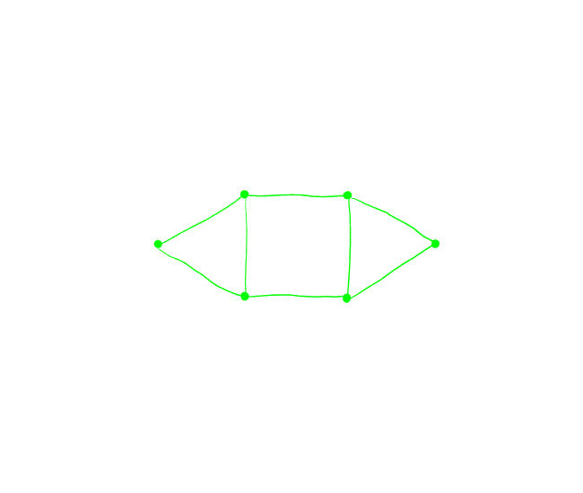

Cada grafo no plano codifica um nó ou um enlace. Por exemplo, o triângulo codifica o nó trifólio:

Um grafo é um conjunto de vértices e um conjunto de pares de vértices, las arestas.
Os grafos são muito fáceis de produzir. Uma grande classe deles é até chamada "dessins d’enfants" (desenhos infantis) por matemáticos (é minha profissão). Aqui está um grafo:

Seu nó é um símbolo da dinastia Ming. O processo para desenhar o nó que ele codifica é em quatro etapas:

- Coloque um cruzamento no meio de cada aresta.
- Conecte os pedaços de linhas um ao outro.
- Classificar o padrão para cima / para baixo.
- Espalha o seu design.
Aqui está outro exemplo:

 Mas vamos voltar um passo a passo no símbolo Ming. Primeiro, coloque um pequeno cruzamento no meio de cada artista:
Mas vamos voltar um passo a passo no símbolo Ming. Primeiro, coloque um pequeno cruzamento no meio de cada artista:
É importante desenhar os cruzamentos de forma ordenada para que não haja dúvidas sobre a direção em que um pouco de linha aponta. Em particular, não marque simplesmente o meio da borda.

 Você deve conectar esses pedaços de linhas uns aos outros para que eles fluam muito bem sem o começo e o fim. Para fazer isso, pense em seu grafo como sendo um labirinto, onde cada aresta é uma parede com uma porta aberta no meio, onde ocorre a travessia.
Você deve conectar esses pedaços de linhas uns aos outros para que eles fluam muito bem sem o começo e o fim. Para fazer isso, pense em seu grafo como sendo um labirinto, onde cada aresta é uma parede com uma porta aberta no meio, onde ocorre a travessia.
 Escolha um pedaço de linha, ele aponta em uma determinada direção. Siga a parede nessa direção, vire a esquina, siga a parede até chegar a outra travessia. Um de seus tópicos aponta para você, é aquele para se conectar.
Escolha um pedaço de linha, ele aponta em uma determinada direção. Siga a parede nessa direção, vire a esquina, siga a parede até chegar a outra travessia. Um de seus tópicos aponta para você, é aquele para se conectar.

 Nesta fase, você precisa endireitar as coisas um pouco para que cada segmento funcione bem. Mas não faça isso muito rápido, não tente adivinhar muito rápido, como o caos pode ocorrer. Portanto, não seja muito inteligente e aplique as regras.
Nesta fase, você precisa endireitar as coisas um pouco para que cada segmento funcione bem. Mas não faça isso muito rápido, não tente adivinhar muito rápido, como o caos pode ocorrer. Portanto, não seja muito inteligente e aplique as regras.
Em terceiro lugar, em cada travessia, você deve decidir qual tópico acabou e em que se encontra. Você poderia definir o primeiro de forma arbitrária e, em seguida, segui-lo, em seguida, depois, em seguida, mudando seu status em cada cruzamento ao longo do caminho. Isso pode funcionar para pequenos projetos, mas é incontrolável para nós maiores. Você acaba com inconsistências entre partes do seu desenho.
Felizmente, há uma maneira mais fácil:
 Desenhe este pequeno guia em um canto de uma página e arranque-o. Então, para cada aresta do seu grafo, coloque seu guia ao lado de ambas as arestas alinhadas. Ele decidirá para você qual dos dois tópicos acabou.
Desenhe este pequeno guia em um canto de uma página e arranque-o. Então, para cada aresta do seu grafo, coloque seu guia ao lado de ambas as arestas alinhadas. Ele decidirá para você qual dos dois tópicos acabou.
Outra maneira de olhar para ele é escolher uma aresta, alinhar essa aresta com sua visão, figurar-se em um vértice e olhar diretamente para a aresta. Então, entre os dois fios cruzados na sua frente, um vem da sua direita, o outro vem da sua esquerda. Imagine-se segurando esses fios com as duas mãos e, em seguida, cruze os braços com (digamos) a esquerda acima da direita.

Em seguida, infle seu nó. Pense no fio que você apenas desenhou como a linha amarela no meio de uma estrada, você precisa agora desenhar o lado esquerdo e direito da estrada. Tenha cuidado para que em cada travessia, há uma ponte, uma estrada passa abaixo da ponte e a outra passa acima. Você deve começar por sublinhar as pontes para que você saiba por onde começar e por onde parar.
Agora você está pronto para alguns exercícios.